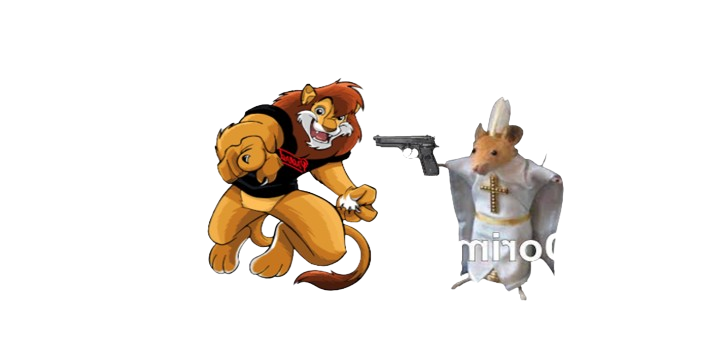
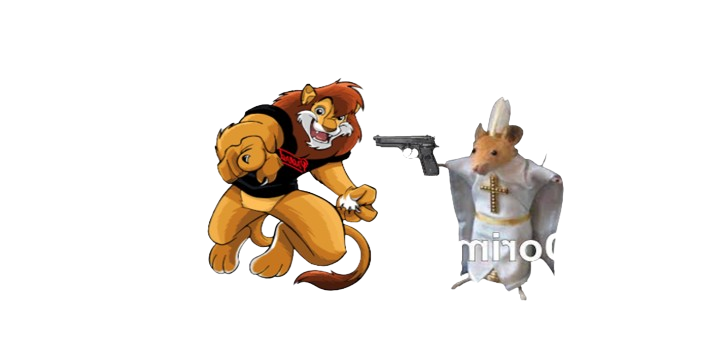

O leão e o ratinho
 
Um leão, cansado de tanto caçar,
dormia espichado debaixo da sombra boa de uma árvore.
Vieram uns ratinhos passear em cima dele e ele acordou.
Todos conseguiram fugir, menos um,
que o leão prendeu debaixo da pata.
Tanto o ratinho pediu e implorou que
o leão desistiu de esmagá-lo
e deixou que fosse embora.
Algum tempo depois o leão ficou preso na rede de uns caçadores.
Não conseguindo se soltar,
fazia a floresta inteira tremer com seus urros de raiva.
Nisso apareceu o ratinho,
e com seus dentes afiados roeu as cordas e soltou o leão.
Moral: Uma boa ação ganha outra.